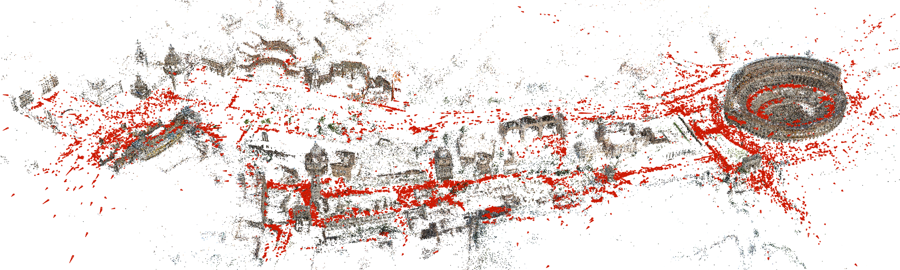
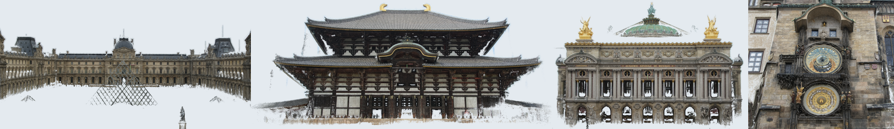

COLMAP

由 COLMAP 的 SfM 流程基于 21K 张照片生成的罗马市中心稀疏模型。

由 COLMAP 的 MVS 流程生成的多个地标稠密模型。
关于
COLMAP 是一个通用的运动恢复结构（SfM）与多视图立体（MVS）流程，同时提供图形界面和命令行界面。 它具备丰富的功能，可对有序和无序的图像集合进行重建。该软件基于新版 BSD 许可协议发布。
最新源代码可在 GitHub 获取。COLMAP 构建于已有工作之上， 在使用 COLMAP 中的特定算法时，也请按照源代码中的说明引用相应的原作者。
下载
可执行文件及其他资源可从 https://demuc.de/colmap/ 下载。
快速上手
支持
如有问题，请使用 GitHub Discussions 进行讨论； 如需提交错误报告、功能请求/新增等，请使用 GitHub issue 跟踪器。
引用
如果你在研究中使用了本项目，请引用:
@inproceedings{schoenberger2016sfm,
author={Sch\"{o}nberger, Johannes Lutz and Frahm, Jan-Michael},
title={Structure-from-Motion Revisited},
booktitle={Conference on Computer Vision and Pattern Recognition (CVPR)},
year={2016},
}
@inproceedings{schoenberger2016mvs,
author={Sch\"{o}nberger, Johannes Lutz and Zheng, Enliang and Pollefeys, Marc and Frahm, Jan-Michael},
title={Pixelwise View Selection for Unstructured Multi-View Stereo},
booktitle={European Conference on Computer Vision (ECCV)},
year={2016},
}
如果你使用了全局 SfM 流程（GLOMAP），请引用:
@inproceedings{pan2024glomap,
author={Pan, Linfei and Barath, Daniel and Pollefeys, Marc and Sch\"{o}nberger, Johannes Lutz},
title={{Global Structure-from-Motion Revisited}},
booktitle={European Conference on Computer Vision (ECCV)},
year={2024},
}
如果你使用了图像检索 / 词汇树引擎，请引用:
@inproceedings{schoenberger2016vote,
author={Sch\"{o}nberger, Johannes Lutz and Price, True and Sattler, Torsten and Frahm, Jan-Michael and Pollefeys, Marc},
title={A Vote-and-Verify Strategy for Fast Spatial Verification in Image Retrieval},
booktitle={Asian Conference on Computer Vision (ACCV)},
year={2016},
}
致谢
COLMAP 最初由 Johannes Schönberger 编写，其博士导师 Jan-Michael Frahm 与 Marc Pollefeys 提供了资助。当前核心项目维护者团队包括 Johannes Schönberger、 Paul-Edouard Sarlin 和 Shaohui Liu。
PyCOLMAP 中的 Python 绑定最初由 Mihai Dusmanu、 Philipp Lindenberger 和 Paul-Edouard Sarlin 添加。
本项目还得益于社区无数的贡献，包括错误修复、改进、新功能、第三方工具以及社区支持 （特别感谢 Torsten Sattler）。